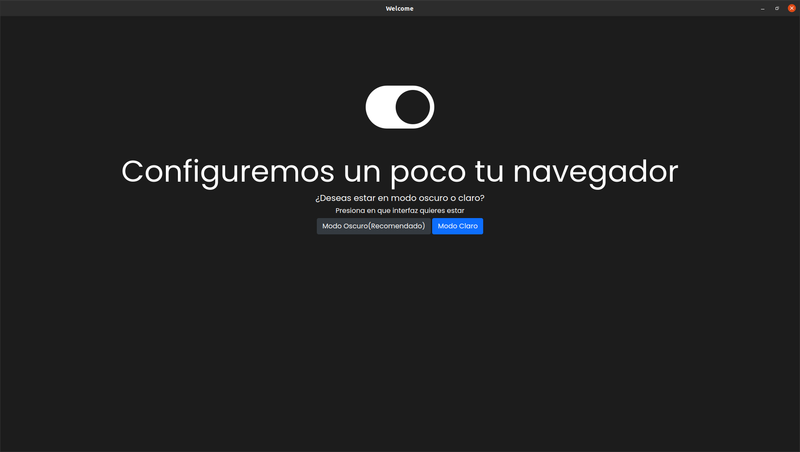

Iconny Browser 13 "Reborn" Stable el renacimiento de un navegador
Escrito por Admin 15/03/2021

Nos complace anunciar que hemos sacado la version 13 Stable con nombre en codigo o mejor dicho nombre de desarrollo "Reborn" esta version
puede ser no la que trae mas novedades pero si es la mas importante hasta la fecha debido a los problemas ya reportados con electron-navigation
Novedades
Como primera novedad es el nuevo tour de recorrido que es mas facil para el usuario nuevo

Nuevo recorrido
Como segunda y la mas importante es el reemplazo de electron-navigation por iconny-navigation ahora con gestion por ventanas y no por pestañas

iconny-navigation
Tercera novedad ahora el perfil secundario trabaja con iconny-navigation

Perfil secundario
Los repositorios de Iconny Updates y el repositorio principal, CBR y snap seran actualizados en las proximas horas para descargar esta nueva Stable
Otros cambios menores :
Como segunda y la mas importante es el reemplazo de electron-navigation por iconny-navigation ahora con gestion por ventanas y no por pestañas
iconny-navigation
Tercera novedad ahora el perfil secundario trabaja con iconny-navigation
Perfil secundario
Los repositorios de Iconny Updates y el repositorio principal, CBR y snap seran actualizados en las proximas horas para descargar esta nueva Stable
Otros cambios menores :
Esperamos que les guste estos nuevas funciones y cambios
Atte Administrador Descargar AppImage
Descargar Snap
Ver Release En Github